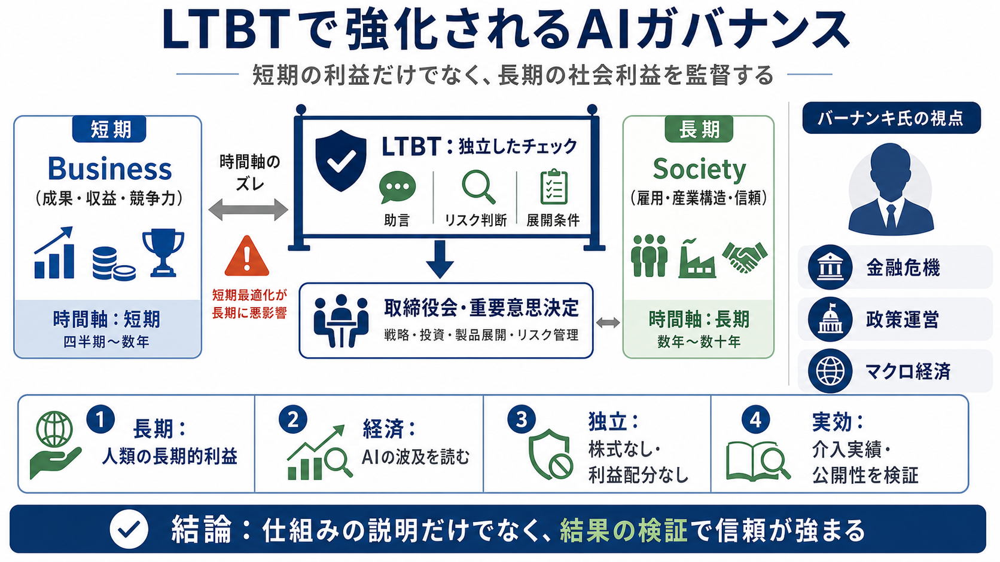

COVER
02 / 13
長期利益を守る仕組み
LTBT
加入で進むAIガバナンス
AnthropicはLong-Term Benefit Trust（LTBT）にベン・バーナンキ氏を迎え、AIの「長期の社会利益」を守る監督を厚くしました。
ポイントは、技術の性能だけでなく、意思決定を“長期視点”でチェックする制度設計（ガバナンス）です。
PROBLEM
03 / 13
短期の利益 vs 長期の影響
時間軸のズレ
AIの社会影響は、開発・導入から遅れて顕在化することがあります。だからこそ、短期の業績や期待だけに最適化されると、リスクが見落とされやすくなります。
短期（Business）
成果、収益、競争力
長期（Society）
雇用、産業構造、社会の信頼
METAPHOR
04 / 13
“技術”の外側に監督
ガードレール
LTBTは、AI開発の進め方を「長期的な人類の利益」に合わせるための独立したチェックとして位置づけられています。
目的
長期の社会便益
手段
取締役会への助言
狙い
短期最適化を抑制
ARCHITECTURE
05 / 13
独立性が制度の核
LTBTの設計
AnthropicはPublic Benefit Corporation（公益を目的とする会社）で、LTBTは経営や投資家と独立して、長期のバランスを保つ役割を担います。
独立性（受託者）
Anthropic株式なし・利益配分なし
報酬の性質
勤務・サービスに対して支払われる
ENUMERATION
06 / 13
バーナンキ氏：何が効くか
経済・金融の視点
今回の任命は、AIが経済・社会に与える変化を「危機の読み方／政策運営」という文脈で捉える狙いがあると読めます。
政策
FRB議長（2006–2014）／2008年危機対応
学術
大恐慌・金融危機と銀行の役割／2022年ノーベル賞
EVIDENCE
07 / 13
ミッションを“確かにする”
責任ある開発
記事では、バーナンキ氏がLTBTのメンバーとしてAnthropicの「人類にとっての長期的利益のための責任ある高度AI開発」をより確実にする役割を担うと説明されています。
LTBTの関与
AIのリスク・社会的影響に関わる重要意思決定で助言
組織の前提
技術だけでなく制度で長期利益を守る
DISTINCTION
08 / 13
“存在”だけでは足りない
設計 vs 運用
制度の実効性は、どれだけ頻繁に・どんな基準で・どの程度介入したかに依存します。現時点の本文情報は「権限」中心で、運用の具体は限定的です。
本文で分かる
独立性・助言権限・構成の考え方
本文で不足
介入頻度／公開性／勧告の反映実績／検証方法
COMPARISON
09 / 13
何が“影響”になり得る？
意思決定への接続
LTBTは単なる諮問ではなく、取締役会への助言や関与を通じて、AIのリスク判断が意思決定プロセスに入り込む可能性を示しています。
技術評価
性能・安全性の見立て
意思決定
優先度、展開条件、導入判断
社会的影響
雇用・金融・信頼への波及
PROCESS
10 / 13
読むための観点（要点）
4つの焦点
このニュースを評価する際は、「長期の社会利益」「経済領域の知見」「独立性」「運用の透明性」の4点で見分けると整理しやすいです。
i. 長期
短期業績ではなく“人類の長期的利益”へ照準
ii. 経済
危機対応・マクロ経済の経験がAIの波及に接続
iii. 独立
株式なし・利益配分なし・報酬の性質で利益相反を抑制
iv. 実効
介入実績・基準・公開性など運用情報が鍵
CLOSING
11 / 13
結論：制度を追跡する
“整った”だけでは終わらない
本件の強みは、経済・金融危機の経験を含む人材でLTBTを拡充し、独立性も明確に説明している点です。今後は、助言が実際の開発・展開にどう反映されたかを追うのが次の一手です。
信頼は“仕組みの説明”だけでなく、“結果の検証”で強化されます。
REFERENCES
12 / 13
参照（記事要旨ベース）
出典リンク
本デッキは、ユーザー提供の本文要約に基づいて構成しています。原文記事のURLが未提示のため、主要参照元を記載できません。
必要情報
原文記事URL／発表元（Anthropic公式・信託関連資料）
制度
Long-Term Benefit Trust（LTBT）
体制
Public Benefit Corporation（公益目的会社）
REFERENCES
13 / 13
References
No references found